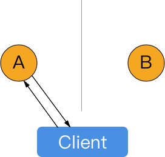
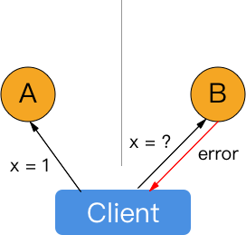
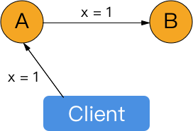

CAP定理
对于一个分布式系统来说，不可能同时满足以下三点：
- （强）一致性（Consistency）
- 可用性（Availability）（即每次请求没有物理上不可用的节点时都能获取到非错的响应）
- 分区容错性（Partition tolerance）（即如果分布式系统由于某些原因，存在互相不能通信的两组节点，那么这个系统仍然应该正常的提供服务）
例子
假设有两个节点和一个Client：
如果要保证可用性（A）和分区容错性（P），那么在网络出现分区时，无论用户的请求被发送到了两个节点中的任何一个，无论如何都要做出相应，而在一个节点上的插入请求无法被另一个节点知道，这样两个节点间不可能保持一致性，即放弃了C。
如果要保证（强）一致性（C）和分区容错性（P），那么为了修正上一个系统的问题，对在插入某个数据时没有得到插入的节点，或者其上对应数据不是最新的节点，在被请求这个数据时只能返回错误，这就放弃了A。

如果要保证（强）一致性（C）和可用性（A），那么不得不允许两个节点之间可以通信，在每次插入时将数据分发到每一个节点上，但此时如果节点之间网络不可达，那么这个分发操作就不可行。

各种实践在CAP之间的取舍1
要注意的是，实践中并不是说去选择CAP中的两个，放弃另外一个。CAP里的每个标准都不是绝对的“有”或者“没有”的关系，而是一个程度的问题，例如一致性可以降低到任何一个一致性等级，可用性可以做到n个9，而分区容错性可以降低到有“部分”节点和其他部分不能通信时整个系统可用的程度。
以下是使用一些一致性机制时对应的CAP取舍。
Lease机制
完全的C，较好的A和P。
Quorum 机制
有一定的 C，有较好的 A，也有较好的 P。
两阶段提交机制
完全的 C，很糟糕的 A，很糟糕的 P。
Paxos
完全的 C，较好的 A，较好的 P。
1. 关于这点，这篇文章写得很好。 ↩